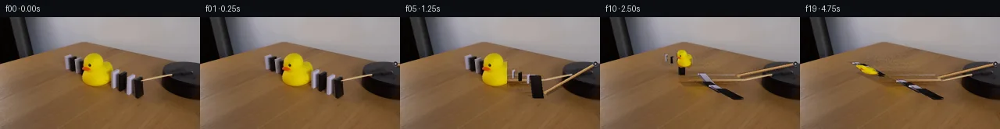

![首帧]()

Round 00
2026-11-06T08:37:19.073209+00:00像素候选变化代码 +390/−0inspection 更新
pixels 9f89a3f3c05be5bb · code 49a58d1d5fca1c10
查看本轮 generate.py 真实 diff
--- previous/generate.py
+++ current/generate.py
@@ -0,0 +1,390 @@
+"""PixelWorld-Text case_0057 generator.
+
+Event: a wooden stick attached to the black platform (right) rotates
+clockwise, sweeps in from the right edge and knocks the first domino (N1).
+The black/white domino chain propagates diagonally up-left, topples the
+yellow rubber duck in the middle, and the duck knocks the remaining far
+dominoes. 20 frames, 256x144, 4 fps.
+
+Frame 00 is byte-identical to first_frame.png. Moving objects are erased
+from their upright footprints (row-wise wood reconstruction), then
+dominoes are drawn as analytic rotating 3-D slabs, the duck is an affine
+perspective-fall warp of its segmented RGBA patch, and the stick is a
+wooden capsule with a contact shadow. Rendering is 2x supersampled and
+composited so every untouched pixel stays identical to frame 00.
+"""
+import numpy as np
+from PIL import Image, ImageDraw, ImageFilter
+from scipy import ndimage
+from artifact_io import save as artifact_save
+
+SS = 2 # supersampling factor
+W, H = 256, 144
+rng = np.random.default_rng(5701)
+
+FRAME0 = np.array(Image.open('first_frame.png').convert('RGB'))
+assert FRAME0.shape == (H, W, 3)
+
+# ---------------------------------------------------------------- geometry
+# fall direction on screen (toward far end of the chain), horizontal rho
+FX, FY = -0.921, -0.388
+RHO = 0.92
+
+# domino definitions, far -> near (also draw order)
+# rect = upright footprint used for erase / static crop
+DOM = [
+ dict(id='F4', kind='W', cx=87.0, by=67, h=19, w=7.0, rect=(83, 47, 91, 68)),
+ dict(id='F3', kind='B', cx=94.5, by=69, h=19, w=8.0, rect=(90, 50, 99, 70)),
+ dict(id='F2', kind='W', cx=101.0, by=71, h=19, w=6.0, rect=(98, 51, 104, 72)),
+ dict(id='F1', kind='B', cx=105.5, by=74, h=18, w=6.0, rect=(102, 55, 108, 75)),
+ dict(id='N4', kind='W', cx=147.5, by=91, h=23, w=9.0, rect=(143, 67, 152, 92)),
+ dict(id='N3', kind='B', cx=156.5, by=95, h=24, w=10.0, rect=(151, 70, 162, 96)),
+ dict(id='N2', kind='W', cx=166.0, by=99, h=26, w=9.0, rect=(162, 72, 171, 100)),
+ dict(id='N1', kind='B', cx=177.5, by=104, h=27, w=12.0, rect=(171, 76, 184, 105)),
+]
+BY_ID = {d['id']: d for d in DOM}
+
+DUCK_BASE = np.array([124.0, 87.0])
+DUCK_RECT = (103, 44, 145, 90)
+DUCK_RHO = 0.90
+
+PIVOT = np.array([250.0, 60.0])
+ROD_LEN = 74.0
+ROD_W = 3.4
+
+# --------------------------------------------------------- clean background
+def wood_like(px):
+ r, g, b = px[..., 0], px[..., 1], px[..., 2]
+ return (r > 84) & (r < 180) & (g > 55) & (g < 140) & (b < 105) & \
+ (r > g + 8) & (g >= b - 4)
+
+f = FRAME0.astype(np.int16)
+# duck mask (yellow / orange / dark eye within the duck rect)
+duck_mask = np.zeros((H, W), bool)
+x0, y0, x1, y1 = DUCK_RECT
+rr, gg, bb = f[y0:y1, x0:x1, 0], f[y0:y1, x0:x1, 1], f[y0:y1, x0:x1, 2]
+yellow = (rr > 140) & (gg > 80) & (bb < 95) & (rr - bb > 60)
+duck_mask[y0:y1, x0:x1] = yellow
+duck_mask = ndimage.binary_closing(duck_mask, iterations=1)
+duck_mask = ndimage.binary_dilation(duck_mask, iterations=1)
+
+erase0 = duck_mask.copy()
+for d in DOM:
+ x0, y0, x1, y1 = d['rect']
+ erase0[y0:y1, x0:x1] = True
+# widen a touch so AA fringes disappear
+erase0 = ndimage.binary_dilation(erase0, iterations=1)
+
+def row_wise_fill(img, mask):
+ """Interpolate masked pixels from nearest clean wood pixel in each row,
+ then add grain matched to the local row statistics."""
+ out = img.copy().astype(np.float32)
+ ys, xs = np.where(mask)
+ for y in np.unique(ys):
+ cols = np.where(mask[y])[0]
+ clean = np.where(~mask[y])[0]
+ if len(clean) == 0:
+ continue
… diff truncated; 303 more lines …